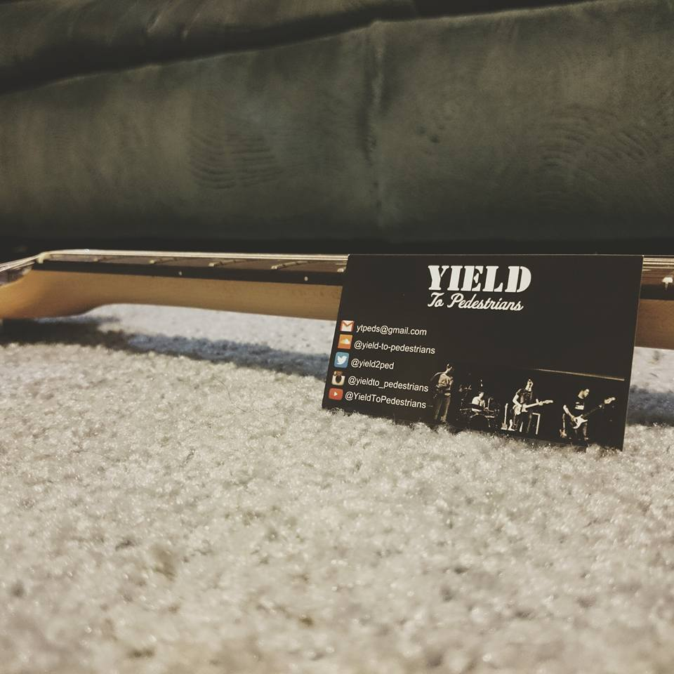

Contact
For general inquiries, send an email to ytpeds@gmail.com.
To contact members of the band directly, find David, Sam, or Alex on SoundCloud. Spencer prefers Facebook.
For general inquiries, send an email to ytpeds@gmail.com.
To contact members of the band directly, find David, Sam, or Alex on SoundCloud. Spencer prefers Facebook.